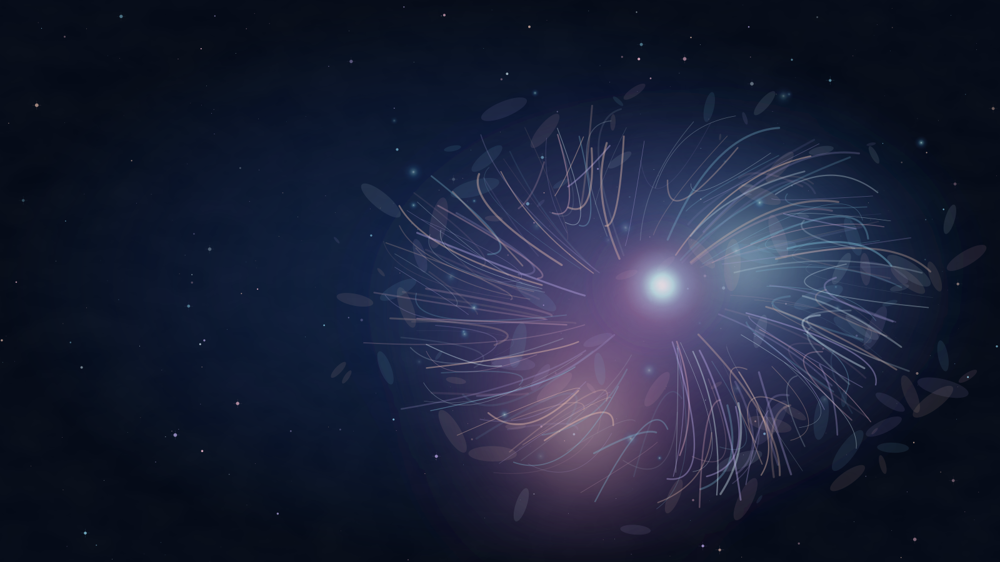
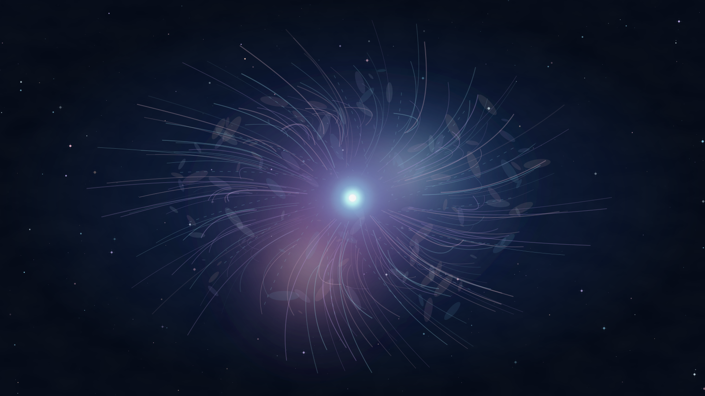
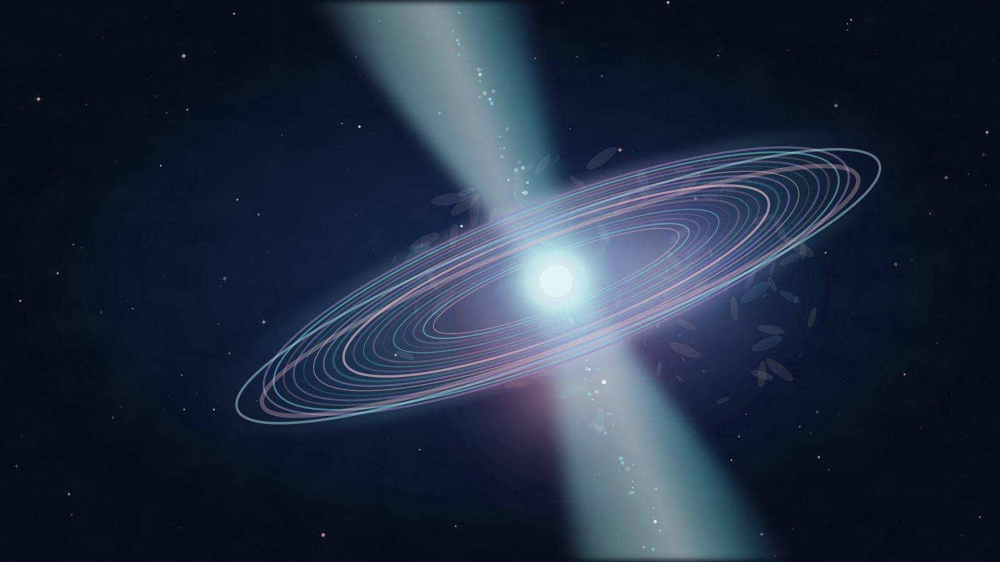
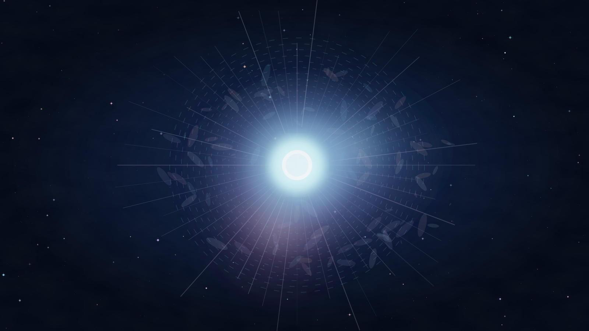

ROZDZIAŁ 35 · NARODZINY GWIAZD
Tam, gdzie rodzą się gwiazdy.
Nie ma jeszcze Słońca. Nie ma planet, oceanów ani nieba oglądanego z powierzchni Ziemi. Jest tylko zimny obłok gazu i pyłu. A w nim — grawitacja, która cierpliwie zaczyna porządkować ciemność.

Zimno, które skrywa przyszłe słońca. Autorska ilustracja ATLAS SOLARIS; przedstawienie artystyczne, nie fotografia ani rekonstrukcja konkretnego obłoku.
PRAWIE NIC NIE WIDAĆ
Najważniejsze wydarzenie zaczyna się bez jednego błysku.
Wielka część gwiazd rodzi się w rozległych, zimnych obłokach molekularnych. Są zbudowane przede wszystkim z gazu, głównie wodoru cząsteczkowego, z domieszką helu i niewielką ilością pyłu. Pył przesłania światło, a gaz pozostaje tak chłodny, że w najgęstszych częściach jego temperatura może wynosić około dziesięciu kelwinów.
Na zdjęciu w świetle widzialnym taki obszar bywa ciemną plamą na tle jaśniejszej Galaktyki. W podczerwieni, szczególnie dzięki teleskopowi Jamesa Webba, zaczyna ukazywać się jego ukryta struktura. Tam, gdzie z pozoru nic się nie dzieje, w rzeczywistości rosną gęstsze skupiska materii.
Nie wiemy z góry, ile gwiazd powstanie z jednego obłoku. Gaz jest nierównomierny. Pole magnetyczne, turbulencje, nacisk sąsiednich gwiazd i fale uderzeniowe mogą go poruszać, ściskać albo rozrywać. Każda ciemna chmura jest trochę innym początkiem.
MILIONY LAT? NIEKONIECZNIE — ZALEŻY OD GĘSTOŚCI
Czasami wystarczy, że materia stanie się odrobinę gęstsza.
W chłodnej chmurze przypadkowe zaburzenie może zebrać więcej gazu w jednym miejscu. Większa masa oznacza silniejszą grawitację; silniejsza grawitacja może przyciągać dalszą materię. Jeżeli lokalny rdzeń ma wystarczająco dużą masę względem temperatury i gęstości, grawitacja może pokonać ciśnienie gazu i rozpocząć zapadanie.
W uproszczonym modelu opisuje to masa Jeansa. Rośnie wraz z temperaturą, a maleje, gdy gaz staje się gęstszy. To nie wyrok wydawany przez Wszechświat — rzeczywisty obłok nie jest jednolity, a jego pole magnetyczne, rotacja i przepływy mogą wiele zmienić. To jednak ważna wskazówka, dlaczego zimne, gęste miejsca są gwiezdnymi kolebkami.

Grawitacja rzeźbi zagęszczenie. Linia i kierunek smug są wizją artystyczną. Masa Jeansa i czas swobodnego spadku są obliczane osobno w laboratorium poniżej.
W miarę zapadania się rdzenia rośnie jego gęstość. Jedna wielka chmura może podzielić się na wiele mniejszych ośrodków kondensacji. Dlatego gwiazdy często powstają w grupach i gromadach, a nie w całkowitej izolacji.
Przy czysto grawitacyjnym spadku z zadanej gęstości możemy wyliczyć charakterystyczny czas swobodnego spadku. Przy gęstości około 10 000 cząstek na centymetr sześcienny jest to rząd kilkuset tysięcy lat. Rzeczywiste formowanie gwiazdy może trwać dłużej.
W CENTRUM RODZI SIĘ NOWY OBIEKT
Nie jest jeszcze gwiazdą, ale już potrafi świecić.
Kiedy środek zagęszczenia staje się coraz gorętszy, tworzy się młody obiekt protogwiazdowy. Materia nadal spada na jego powierzchnię lub zasila go przez dysk. Protogwiazda może promieniować bardzo intensywnie, ponieważ podczas akrecji i grawitacyjnego kurczenia uwalniana jest energia.
To ważna różnica: jasna protogwiazda nie musi jeszcze czerpać energii ze stabilnej syntezy wodoru w jądrze. Jej blask może być przede wszystkim świadectwem grawitacji i dopływu materii.
Gaz nie opada idealnie po prostych liniach. W odziedziczonym po obłoku ruchu kryje się moment pędu. Podczas zapadania nawet powolny początkowy obrót ma coraz większe znaczenie. Część gazu organizuje się w spłaszczony, wirujący dysk akrecyjny.

Protogwiazda, dysk i dwubiegunowe wypływy. Scena artystyczna — barwy, kształty i proporcje nie stanowią pomiaru ani symulacji magnetohydrodynamicznej.
W przyszłości z części takiego dysku mogą narodzić się planety. Ale na razie nie oglądamy jeszcze gotowego Układu Słonecznego. To etap intensywnego przepływu gazu, narastania masy gwiazdy i transportu momentu pędu.
NIE WSZYSTKA MATERIA SPADA DO ŚRODKA
Aby gwiazda rosła, część gazu musi odlecieć.
W wielu młodych układach obserwujemy wąskie, szybkie strumienie materii wyrzucane w pobliżu osi obrotu. Są to dżety. Oddziałują na otoczenie, tworzą fale uderzeniowe i świecące węzły. Ich związek z dyskiem i polami magnetycznymi jest kluczowy: pomagają przenosić moment pędu z układu.
Nie należy traktować ich jak płomieni rakiety. Nie powstają z chemicznego spalania. To strumienie plazmy i gazu przyspieszane przez procesy związane z polem magnetycznym, ruchem obrotowym i akrecją.
Wyobraź sobie, że kamera oddala się od protogwiazdy. Najpierw widać sam dysk. Potem dwa przeciwległe błękitne strumienie wybijające się wysoko ponad jego płaszczyznę. Dalej — zderzenia strug z chmurą i delikatne, jasne łuki. Środowisko narodzin samo zdradza, gdzie w jego wnętrzu ukrywa się młoda gwiazda.
FILARY STWORZENIA / MGŁAWICA ORZEŁ
To nie fantazja artysty. Tak wygląda kosmiczna kolebka.
W Mgławicy Orzeł, około 6500 lat świetlnych od nas, znajdują się słynne Filary Stworzenia. Nie są nieruchomymi rzeźbami. Ich chłodny gaz i pył są kształtowane przez promieniowanie oraz wiatry pobliskich gwiazd. W gęstszych rejonach powstają nowe, młode obiekty gwiazdowe.
W 2022 roku Webb pokazał je w nowej, podczerwonej perspektywie. Na zdjęciu widać niezliczone gwiazdy, częściowo przejrzyste warstwy pyłu i jasne miejsca związane z młodymi obiektami. Czerwone, faliste struktury przy filarach wskazują na oddziaływanie dżetów młodych gwiazd z otaczającym gazem.

Filary Stworzenia, teleskop Jamesa Webba, NIRCam. To fotografia astronomiczna przetworzona z danych podczerwonych, z przypisaniem barw do filtrów. Źródło i opracowanie: NASA, ESA, CSA, STScI; Joseph DePasquale, Anton Koekemoer, Alyssa Pagan. Zobacz oryginał ↗
Ważna uwaga: pokazane barwy nie są tym, co zobaczylibyśmy wprost ludzkim okiem. Teleskop mierzy różne pasma promieniowania podczerwonego, a astronomowie przypisują im barwy, dzięki czemu struktura obłoku staje się czytelna.
Obserwacje takich miejsc łączą się z pomiarami widm, ruchów gazu i promieniowania. Nie musimy być świadkami całego procesu trwającego setki tysięcy czy miliony lat. W różnych obiektach widzimy poszczególne jego etapy.
DALEJ NIŻ PIERWSZY ROZBŁYSK
Najpierw świeci grawitacja. Potem zapala się wodór.
Wraz z dalszym kurczeniem i ewolucją wnętrze młodej gwiazdy osiąga coraz wyższe temperatury. Dla gwiazd podobnych do Słońca warunki do stabilnej syntezy wodoru w hel pojawiają się, gdy centralna temperatura osiąga rząd dziesięciu milionów kelwinów. Sposób i tempo tej drogi zależą od masy gwiazdy.
Nie jest to jeden uniwersalny moment wyznaczany przez prosty zegar. Masywne gwiazdy rozwijają się inaczej niż słabsze czerwone karły. U jednych droga od zapadania obłoku do ciągu głównego jest znacznie krótsza, u innych dłuższa.

Gwiazda odsłania się z obłoku. Artystyczny skrót długiej ewolucji — intensywność światła na ilustracji nie jest wykresem temperatury ani bezpośrednią fotografią.
Najpiękniejsze jest to, że po osiągnięciu stabilnej równowagi nie kończy się opowieść. Dopiero wtedy zaczyna się główny, długi rozdział życia gwiazdy. Pozostały gaz i pył dysku mogą stać się miejscem narodzin planet.
W ten sposób etap 35 jest drugim końcem historii z poprzedniego rozdziału. Gwiazda, która umierała w supernowej, rozrzuciła materię do międzygwiazdowego oceanu. Teraz patrzymy na fragment takiego oceanu, z którego — po długim czasie i wielu przemianach — może powstać nowe słońce.
Zimny gaz i pył; fragmentacja gęstych rejonów.
Grawitacja i przepływy budują zagęszczenie.
Dopływ materii, ruch obrotowy i dżety.
Początek głównego etapu życia gwiazdy.
Schemat nie przedstawia równych odstępów czasu. W naturze procesy nachodzą na siebie, a ich przebieg zależy od masy i warunków otoczenia.
OD FIZYKI DO WIDOWISKA
Uruchom narodziny gwiazdy.
Zobacz trzy różne perspektywy: obłok na granicy zapadania, wirujący dysk protogwiazdy i symboliczne przejście ku pierwszemu światłu. W pierwszym trybie wynik liczy się ze wzorów; dwa kolejne pozwalają odkrywać artystyczne wizualizacje.
Regulują wygląd artystycznego modelu dysku i wypływów. Nie symulują rzeczywistych równań magnetohydrodynamiki ani tempa akrecji w jednostkach M☉/rok.
Przejścia pomiędzy fazami są wyłącznie ilustracją, a nie ścieżką ewolucyjną konkretnej gwiazdy. Tempo i warunki rozpoczęcia trwałej syntezy zależą od masy i składu.
Obłok jest w stanie obliczanej równowagi pomiędzy grawitacją a ciśnieniem.
W pierwszym trybie przyjmujemy jednorodny, izotermiczny rdzeń o średniej masie cząsteczkowej μ = 2,33, gęstości masowej ρ = μmHn i efektywnej prędkości podtrzymywania ceff = √(kBT/(μmH) + σ²). Używamy definicji długości Jeansa λJ = √(πceff²/(Gρ)), masy MJ = (π/6)ρλJ³ i czasu tff = √(3π/(32Gρ)). Uwzględnienie turbulentnej dyspersji jako dodatkowego izotropowego ciśnienia jest wyłącznie dydaktycznym przybliżeniem. Stwierdzenie „możliwy kolaps” oznacza w tym modelu M > MJ, a nie prognozę rzeczywistego obłoku. Model pomija pola magnetyczne, rotację, chłodzenie, geometryczne niejednorodności i sprzężenie zwrotne.
Tryby „Protogwiazda” i „Pierwsze światło” są wyłącznie ilustracjami sterowanymi suwakiem; nie wyliczają ewolucji gwiazdy. Ruch i wizualizacje Canvas 2D nie wymagają WebGL; animacja wyłącza się, gdy doświadczenie nie jest widoczne lub użytkownik woli ograniczony ruch.
PRAWIE CZTERY I PÓŁ MILIARDA LAT TEMU…
Każde słońce było kiedyś tylko obietnicą.
Nasza gwiazda także zaczęła od międzygwiazdowej materii. Dawno temu podobne prawa fizyki ukształtowały zalążek Słońca, dysk i ostatecznie planety. Nie oznacza to, że pojedyncza znana nam supernowa bezpośrednio stworzyła nasz Układ Słoneczny. Obieg materii w Galaktyce jest długą i skomplikowaną historią, w której uczestniczą liczne pokolenia gwiazd.
Patrząc na zimny obłok, widzimy nie tylko początek nowej gwiazdy. Widzimy możliwość powstania całego układu planetarnego. W dalszej podróży Atlasu wrócimy właśnie do niego: do ziaren pyłu, skalnych zarodków, protoplanet i światów, które dopiero nauczą się krążyć wokół swojego słońca.
Najpierw musi powstać światło. Dopiero potem może powstać miejsce, z którego ktoś na nie spojrzy.
Autor rozdziału: ATLAS SOLARIS. Ilustracje I–IV są autorskimi wizjami artystycznymi. Fotografia Filarów Stworzenia pochodzi z archiwum ESA/Webb i posiada podpis źródłowy. Modele i ich ograniczenia opisano bezpośrednio przy laboratorium.
- NASA Webb — odkrycia związane z narodzinami gwiazd
- NASA — Filary Stworzenia, kamera NIRCam
- ESA/Webb — fotografia Filarów Stworzenia (kadr)
- NASA — A Star Is Born, protogwiazdy i synteza wodoru
- Chevance i in., Space Science Reviews (2020) — Molecular Cloud Lifecycle i kryterium Jeansa
- NASA — Mgławica Oriona i dyski młodych gwiazd